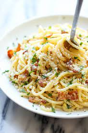

Carbonara Pasta

Description
Italians are really proud of this. And you should be too after you will tase this recipe
Ingredients
- Pasta
- Gorgonzolla
- Bacon
- Parmezan
- Sower cream
Steps
- Put the pasta into water and let it boil for 15 minutes
- Burn the bacon. Let it burn for like 3 minutes
- Put the sower cream and the cheese over the bacon
- Take out the pastas from the water
- Put the pasta over the bacon and cheese sauce, and the dish is ready to be served.
Click here to go back and look for more recipes